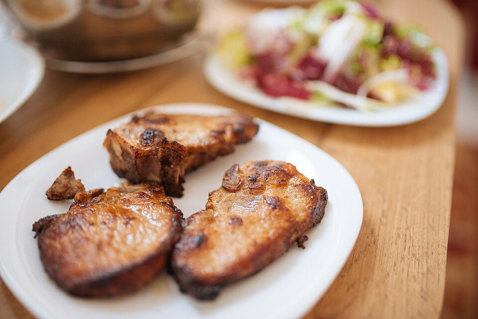

Dinner, Protein, Prep, By Claude
2 pork tenderloins (about 2.4 lb total), or 6 boneless loin chops about 1 inch thick
1 teaspoon kosher salt
1/2 teaspoon black pepper
1 teaspoon olive oil, for the pan
Chimichurri (about 1 cup)
1 packed cup flat-leaf parsley, finely chopped
1/4 cup fresh oregano leaves, chopped (or 1 tbsp dried)
4 garlic cloves, minced
1 small shallot, minced
1/3 cup red wine vinegar
1/3 cup extra virgin olive oil
2 tablespoons water
1/2 teaspoon red pepper flakes
1/2 teaspoon kosher salt
To serve
Roasted baby potatoes (see Chimichurri Flank Steak) or batch rice
Cucumber-tomato salad or greens
A cheaper, leaner stand-in for chimichurri flank steak. Cut pork tenderloin into thick boneless chops (or use boneless loin chops), marinate in some of the chimichurri, and sear for 8 minutes. Freeze portions in the marinade, then thaw overnight for a 10-minute dinner. About a third of the cost of flank steak, with less than half the saturated fat.
Chimichurri: stir together everything except the oil, let it sit 10 minutes, then stir in the oil. Set aside 1/4 cup as the marinade; the rest is the sauce. It keeps 1 week in the fridge.
Chops: trim the silverskin from the tenderloins and cut each into 3 thick pieces of about 6.5 oz. Press each piece flat with your palm to about 1 1/4 inches. Season with the salt and pepper.
Marinate: toss the chops with the reserved 1/4 cup chimichurri. Refrigerate 15 minutes to 24 hours, or bag the portions flat and freeze for up to 3 months. Thaw overnight in the fridge.
Cook: pat the chops dry. Heat the oil in a cast-iron or heavy skillet over medium-high until shimmering. Sear 3–4 minutes per side until browned and 145°F in the center.
Rest 3 minutes. Slice or serve whole with about 2 tablespoons of chimichurri spooned over each chop.
Pork tenderloin is done at 145°F with a little pink in the center. Past 150°F it dries out quickly, so a thermometer helps. Bone-in loin chops also work: add 1–2 minutes per side.
~320 CALORIES
39G PROTEIN
16G FAT (3G SATURATED)
3G CARBS
1G FIBER
(chop with 2 tbsp chimichurri; sides not included)
Photo: Three grilled pork chops.jpg by Shixart1985, CC BY 2.0, via Wikimedia Commons. Representative image, not this exact recipe.